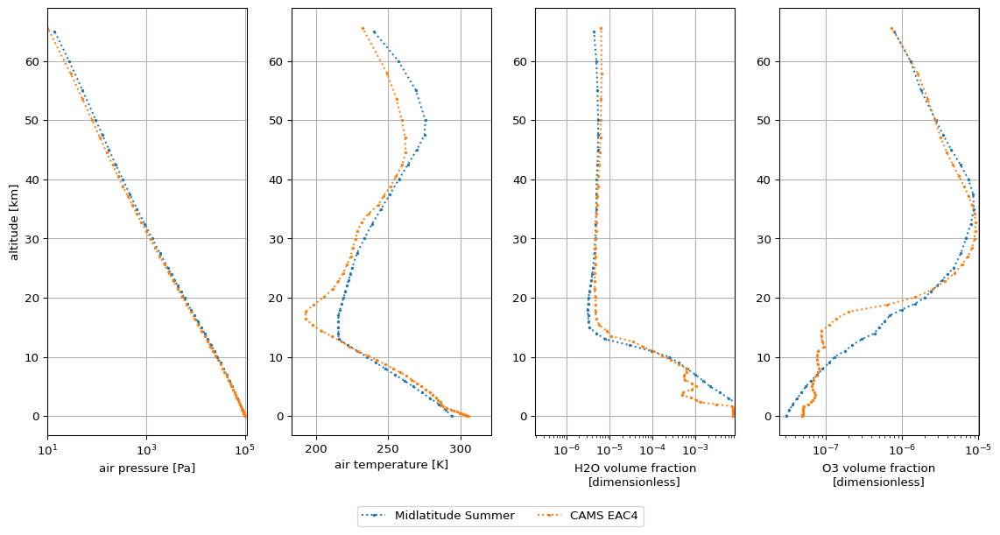

Tutorials¶
CAMS reanalysis datasets¶
In this tutorial series, we will show how the reanalysis datasets from the Copernicus Atmosphere Monitoring Service (CAMS) can be used to :
-
Rescale a standard profile, i.e. modify a standard profile by rescaling the molecular total column densities to match the CAMS values.
-
Create a profile, i.e. create a new atmospheric profile entirely from CAMS multi-levels data.
Prerequisites¶
To convert CAMS data to Joseki profiles, it is required to download the CAMS data from the Atmospheric Data Store beforehand.
For convenience, this tutorial series makes use of two CAMS datasets that are part of Joseki's tests suite:
from joseki.tests_util import find_test_data
test_eac4_single_level_data = find_test_data(
"232f85b4-b3e9-47a7-a52d-9f955c38b9f6.nc"
)
test_eac4_multi_level_data = find_test_data(
"97da7a58-674a-4a1f-a92b-534cb95d07bb.zip"
)
For the purposes of these tests, and to reduce the datasets size, the latter have a very limited coverage in time, space and include a limited number of data variables.
Setup¶
We will need the following imports:
For visualization purposes, we will use the matplotlib library. As it is not part of joseki dependencies, you will have to install it.
In this tutorial series, we will choose the below time and geographical coordinates specifications.
1. Rescale a standard profile¶
In this example, we update the AFGL (1986) Midlatitude Summer profile so that the total H2O and O3 amounts match with the CAMS data. We start by creating the standard profile:
The H2O and O3 total amounts can be extracted from the CAMS reanalysis data
with get_molecule_amounts:
cams_amounts = get_molecule_amounts(
test_eac4_single_level_data,
time=TIME,
lon=LONGITUDE,
lat=LATITUDE,
)
The AFGL (1986) Midlatitude Summer is rescaled to these amounts with
rescale_to:
In order to visualize the difference between the original and rescaled profile, the below code may be used:
fig, _ = plt.subplots(figsize=(6, 6), dpi=96, sharey=True)
params = {
"ls": "dotted",
"marker": ".",
"markersize": 3,
"y": "z",
}
# Water vapour
plt.subplot(1, 2, 1)
midlatitude_summer.x_H2O.plot(
**params,
label="Midlatitude Summer",
xscale="log",
)
rescaled.x_H2O.plot(**params, label="CAMS EAC4")
plt.ylabel("")
plt.xlim([
0.95 * min(rescaled.x_H2O.min(), midlatitude_summer.x_H2O.min()),
1.1 * rescaled.x_H2O.max()
])
plt.grid()
# Ozone
plt.subplot(1, 2, 2)
midlatitude_summer.x_O3.plot(
**params,
label="Midlatitude Summer",
xscale="log",
)
rescaled.x_O3.plot(**params, label="CAMS EAC4")
plt.ylabel("")
plt.xlim([0.5 * rescaled.x_O3.min(), 1.1 * rescaled.x_O3.max()])
plt.grid()
ax = plt.gca()
handles, labels = ax.get_legend_handles_labels()
fig.legend(handles, labels, ncol=2, loc='upper center', bbox_to_anchor=(0.5, 0))
plt.tight_layout()
plt.show()

2. Create a profile¶
To create a profile entirely from CAMS data, we use the EAC4 multi-level data.
ds = from_cams_reanalysis(
data=test_eac4_multi_level_data,
time=TIME,
lon=LONGITUDE,
lat=LATITUDE,
identifier="EAC4",
)
The resulting dataset complies with Joseki's format.
For more advanced usage,
from_cams_reanalysis
provides more options such as altitude extrapolation and regularisation.
Visualize the difference with the standard Midlatitude Summer profile with the below code:
fig, _ = plt.subplots(figsize=(12, 6), dpi=96, sharey=True)
params = {
"ls": "dotted",
"marker": ".",
"markersize": 3,
"y": "z",
}
cams_z_max = ds.z.values.max()
cams_z_mask = midlatitude_summer.z < cams_z_max
# Pressure
plt.subplot(1, 4, 1)
midlatitude_summer.p.where(cams_z_mask).plot(
**params,
label="Midlatitude Summer",
xscale="log",
)
ds.p.plot(**params, label="CAMS EAC4")
plt.xlim([ds.p.min(), 1.1 * ds.p.max()])
plt.grid()
# Temperature
plt.subplot(1, 4, 2)
midlatitude_summer.t.where(cams_z_mask).plot(
**params,
label="Midlatitude Summer",
xscale="linear",
)
ds.t.plot(**params, label="CAMS EAC4")
plt.ylabel("")
plt.xlim([0.95 * ds.t.min(), 1.05 * ds.t.max()])
plt.grid()
# Water vapour
plt.subplot(1, 4, 3)
midlatitude_summer.x_H2O.where(cams_z_mask).plot(
**params,
label="Midlatitude Summer",
xscale="log",
)
ds.x_H2O.plot(**params, label="CAMS EAC4")
plt.ylabel("")
plt.xlim([
0.95 * min(ds.x_H2O.min(), midlatitude_summer.x_H2O.min()),
1.1 * ds.x_H2O.max()
])
plt.grid()
# Ozone
plt.subplot(1, 4, 4)
midlatitude_summer.x_O3.where(cams_z_mask).plot(
**params,
label="Midlatitude Summer",
xscale="log",
)
ds.x_O3.plot(**params, label="CAMS EAC4")
plt.ylabel("")
plt.xlim([0.5 * ds.x_O3.min(), 1.1 * ds.x_O3.max()])
plt.grid()
ax = plt.gca()
handles, labels = ax.get_legend_handles_labels()
fig.legend(handles, labels, ncol=2, loc='upper center', bbox_to_anchor=(0.5, 0))
plt.tight_layout()
plt.show()

3. Merge EAC4 and EGG4 datasets¶
The EAC4 multi-level data does not provide with the carbon dioxide and methane concentration. The EGG4 dataset does. However the EGG4 dataset does not provide with the concentration of ozone, nitrous oxide, carbon monoxide, nitrogen monoxide, sulfur dioxide and nitrogen dioxide whereas the EAC4 dataset does. In order to obtain a description of air composition as complete as possible, we can merge the two datasets together.
test_eac4 = find_test_data("774f1fd2-63c5-4b59-b23d-eadcad7d6b83.zip")
test_egg4 = find_test_data("86dbfcd6-9e0b-40df-8ea7-aa2e328339dc.zip")
ds_eac4 = from_cams_reanalysis(
data=test_eac4,
time="2020-01-01",
lon=23.0,
lat=28.0,
identifier="EAC4",
) # x_H2O, x_O3
ds_egg4 = from_cams_reanalysis(
data=test_egg4,
time="2020-01-01",
lon=23.0,
lat=28.0,
identifier="EGG4",
pressure_data="model_level_60" # surface pressure is not available in EGG4
) # x_CO2, x_CH4
merged = joseki.merge([ds_eac4, ds_egg4])
The merged dataset contains the mole fraction data for the following molecules: \(\rm{H}_2\rm{O}\), \(\rm{C}\rm{O}_2\), \(\rm{O}_3\), \(\rm{C}\rm{H}_4\).